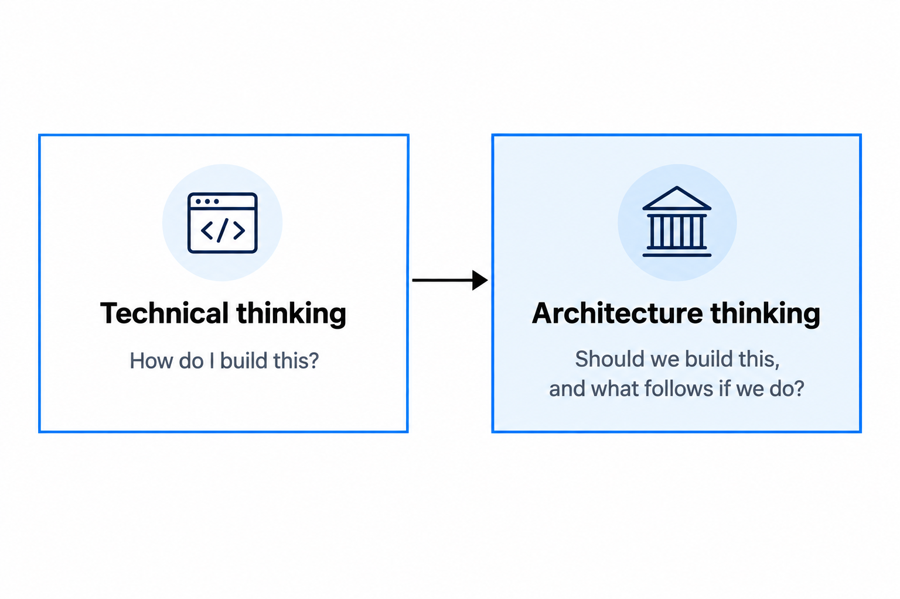
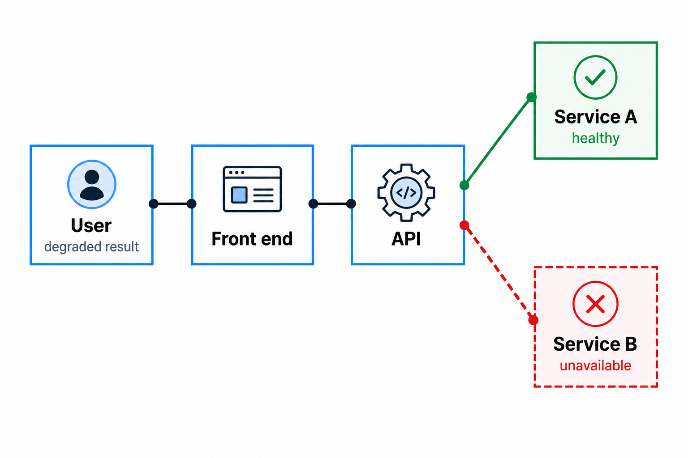
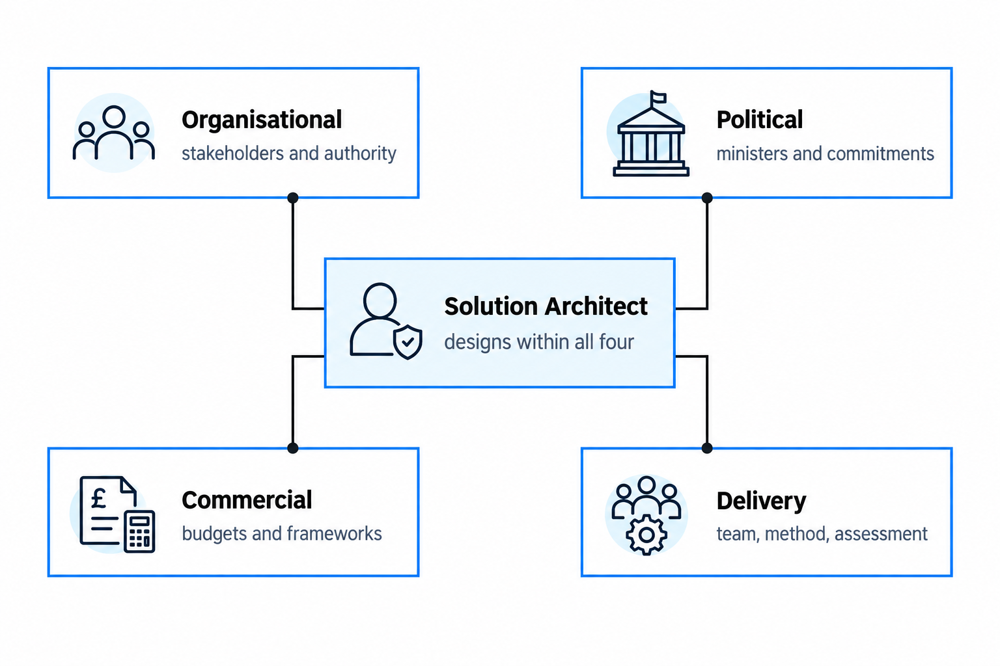
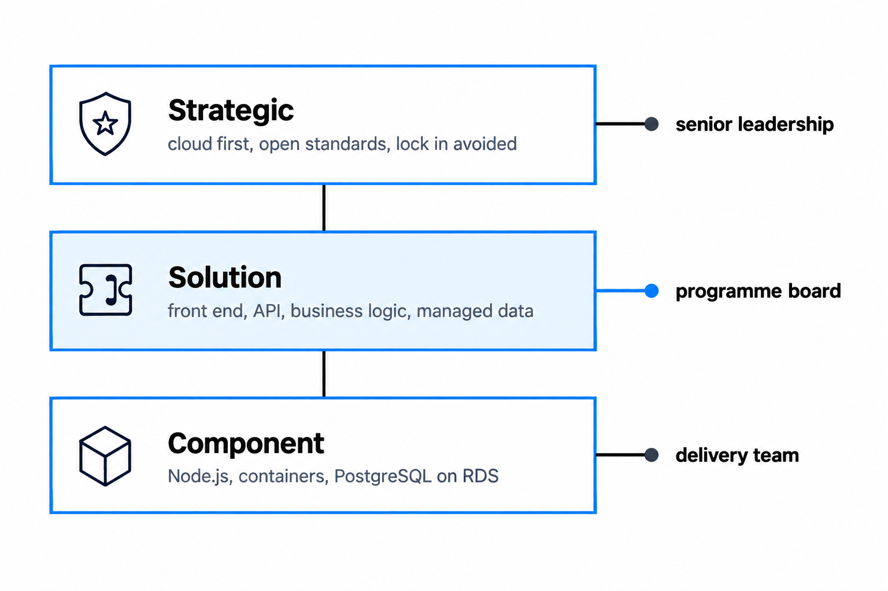

How architecture thinking differs from technical thinking
Moving into solution architecture changes how you think more than it changes what you work on. The shift is from solving the problem you have been handed to weighing what the solution does to everything around it
You'll come away with:
- A clear way to tell a technical problem apart from an architecture decision, and to treat each one accordingly.
- The four kinds of context a design has to survive, and why ignoring any of them sinks good work.
- A habit of making trade-offs explicit and getting the right people to agree to them.
- The discipline of matching your level of detail to the audience and the decision in front of you.
The difference between a technical problem and an architecture decision
You solve technical problems all day, and most of them have an answer. The API takes three seconds to respond and needs to come in under half a second. The scope is bounded, the target is measurable, and you can tell whether caching or an index or a query rewrite has done the job. Architecture decisions do not behave like that. Whether to build a service as one deployable or break it into several has no correct answer waiting to be found. It depends on the size of the team, how often they release, what they can operate, the budget, the timeline and a dozen other things that have nothing to do with code.

The trap for anyone arriving from a strong technical background is to treat the second kind of question like the first, hunting for the right answer when the real work is understanding the trade-offs and making a choice you can defend. The stakes are higher in government because the blast radius is wider. Choosing a database engine affects one team. Choosing to decompose a system reaches into procurement, operations, security, the skills you need to hire for and sometimes other departments. A decision that large earns more thought and broader consultation before you commit to it.
A technical problem has a right answer. An architecture decision has consequences that you have to live with.
Thinking in whole systems
Technical thinking is reductionist, and rightly so. You break a problem into parts, solve each part, and assemble the result. That instinct is what makes good engineers. It is also what trips up new architects, because a system's behaviour is not the sum of its parts. It comes from how the parts interact. A clean database, a well written API and an elegant front end will still produce a poor service if the joins between them are wrong.

Working this way means asking a different set of questions. What does the user actually see when one component fails and the next is left holding the request? If you change the data model in one service, which services downstream break, who owns them, and how do you coordinate the change? The design copes with a thousand users today, so where does it fall over at a hundred thousand? You are building for this year's policy, so how much will have to move when the policy changes next year? In government the system is wider than the technology, because a public service is people, process and policy as much as software. A technically perfect design that ignores how the operational team actually works will fail in service, and a well built one that misses an accessibility obligation will fail its assessment. The discipline is easy to say and hard to keep: before you zoom into the detail, zoom out and understand what the detail sits inside.
Context is the architect's real material
A developer can write excellent code without knowing the minister's name. You cannot design a solution that survives contact with government without knowing the context it has to land in. That context comes in four kinds, and a design that ignores any one of them tends to be elegant on paper and impossible in practice.

Organisational context is who holds the priorities and who actually has authority to decide, which in government means reading the machinery: how departments relate, how arm's length bodies sit, how a shared service runs across several of them. Political context is not optional and never has been. A commitment a minister makes at a conference can set a delivery date that no amount of architecture will move, so the design has to absorb it rather than argue with it. Commercial context decides what you can even reach for, because the route to market through G-Cloud, Digital Outcomes and Specialists 7 or an existing contract shapes both the technology and how fast you can have it. Delivery context is the team you have, the method they work to, and the service assessment they will be held to at the end of alpha and again at beta. GDS announced in July 2026 that it is reworking the Service Standard from a one-off assessment into a living standard, so check the current position before you plan around assessment gates. Get all four right and you design things that get built. Ignore them and you design things that win the whiteboard and lose the programme board.
Every decision is a trade-off
Architecture thinking gives up on the idea of an optimal solution, because at this level there usually isn't one. There are only trade-offs, and the job is to make them visible rather than pretend they aren't there. A few i meet regularly include:
- Simplicity against flexibility. A single deployable is easier to build and harder to change later. A modular design is easier to evolve and more work to build and run.
- Speed against quality. Shipping fast means carrying debt you will pay interest on. Shipping clean means a longer road to the first release.
- Cost against resilience. Spreading across regions costs real money every month. A single region is cheaper and falls over harder.
- Security against usability. Stronger controls protect the data and get in the user's way. Every extra step at sign in is friction someone has to accept.
You do not get to remove these. You get to choose which way to lean, make the choice explicit, and get the people who will live with it to agree. In government the cost of a bad trade-off lands on the public. Trade accessibility away for speed and real people cannot use the service. Trade away maintainability and the taxpayer funds the rework. A useful habit: for any decision that matters, write down in one line what you gain and what you give up. If you can't write the line, you don't yet understand the decision well enough to be making it.
Working at the right level of abstraction
Technical people like detail, and detail is valuable at the right moment. Architecture thinking is the ability to move between levels of detail on purpose, and to know which level a given conversation actually needs.

The mistake I see most often is reaching for the component level too early, naming the framework and the database before anyone has agreed what the solution even is. That is choosing the paint before you know how many rooms the house has. It matters more in government because in any given week you are talking to people at very different heights. A deputy director does not need to hear PostgreSQL. They need to know the data is held securely, the service stays up, and the cost is predictable. The delivery team does not need the ministerial backstory. They need the API contract and the deployment pipeline. Pitch the abstraction to the audience and to the decision, and go deeper only when the decision in front of you actually turns on the detail.
Going deep is a skill. Knowing when not to is the harder one.
Now, next and later
Technical thinking concentrates on the problem in front of you. Architecture thinking holds three time horizons at once. Now is the current phase, where the delivery pressure sits and the constraints are immediate. Next is the six to eighteen months after that, where requirements you can half see today will firm up and the design's ability to flex gets tested. Later is the direction of travel: the department's strategy, and the technology shifts that might reshape your choices before the service is even old.
Balancing them is the whole game. Design only for Now and you build something that works this quarter and cannot move. Design only for Later and you gold plate something that never ships. Government makes this sharper than most places, because political cycles push hard for Now while the services themselves run for decades. Tax, benefits, immigration: these outlive the people who designed them. So build for the current phase, but keep your decisions reversible where you can. Put interfaces where you expect change, and write down the assumptions underneath today's design so the architect who inherits it knows what was meant to move. In the programmes I have worked on, evolutionary architecture (designed to change in steps rather than be ripped out and replaced) has gone better than the big-bang rebuild.
Constraints are what make architecture necessary
Technical thinking tends to start from what is possible. Architecture thinking starts from what is possible here, inside these boundaries. In government the boundaries are numerous, and most of them do not move:
- Budget is usually fixed and annual, and it has to cover running the thing, not just building it.
- Skills are whatever the team actually has. An architecture that needs Kubernetes expertise nobody on the team holds is an architecture with a problem.
- Legacy is real and often decades old, and your new service will almost certainly have to talk to it.
- Policy and law are not the same thing. Accessibility is statutory, security classification and data residency are policy, and the difference decides what you can argue with.
- Procurement decides what you can buy and how quickly, through frameworks rather than a card and a checkout.
- Time is frequently set by something political and not open to negotiation.
Ignore the constraints and you design a fantasy. Take them seriously and you design something that gets built. Constraints are the reason the role exists at all. With no budget, no legacy, no policy and infinite time, anyone could draw the diagram and nobody would need you to.
Start from the problem, then choose the technology
Experienced architects build up pattern recognition, the knack of seeing a familiar shape of problem and reaching for an approach that has worked before. It is genuinely useful, and it carries one specific risk: starting from the pattern instead of the problem.
"We should use microservices."
That is technology talking first. The architecture version of the same thought is "we have a large team that needs to release parts of the system independently, so decomposing it is worth the operational cost." The same word might appear at the end of both. The reasoning that got there is completely different, and the reasoning is the part that holds up when someone pushes on it.
Starting from the technology feels productive because you can begin designing straight away and skip the unglamorous work of understanding the problem. It tends to over engineer, because not every service needs a cluster and a data lake when a well designed single deployable would do. It opens skills gaps, because adopting something new the team can't operate is just deferred risk. And it spends public money building more than the problem asked for. Point 8 of the Technology Code of Practice, share, reuse and collaborate, exists to stop the neighbouring failure: building what government already has. A quick test settles most cases. Can you justify the decision without naming a product? If you can say you need asynchronous integration because the upstream system responds unpredictably and you can't block the user's journey while you wait, that is architecture thinking. If the most you can say is the name of a message broker, you started in the wrong place.
If you can only name the technology, you haven't finished understanding the problem.
This is one practitioner's account of moving into solution architecture in UK government, not official guidance. It does not cover enterprise architecture, security architecture, or architecture outside central government.
Last reviewed August 2026 against the primary sources below. Government policy changes; check the source before relying on this.